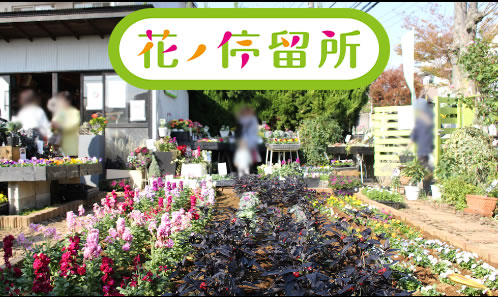

<!DOCTYPE html>
<html>
    <meta charset="UTF-8">
    <title>花の停留所HP</title>
    <link rel="stylesheet" href="styles.css">
	<body style="background-color:#8BC118;">
	</body>
	<title>花の停留所HP</title>
   <link rel="stylesheet" type="css" href="style.css">
   <link rel="stylesheet" type="text/css" href="css.css">
 <div id="top"></div>
	<body>
<header>
      <h1>花の停留所</h1>

		
      <nav>
        <ul>
          <li><a href="http://yamadakaen.blogspot.com/">ブログ(Blogger)</a></li>
		　<li><a href="https://hanatei.thebase.in/">予約注文</a> </li>
          <li><a href="https://www.instagram.com/hananoteiryujo/?hl=ja">Instagram</a></li>
        </ul>
      </nav>
	</header>
	
<body>
<div class="image-with-text">
  <div class="text-overlay">	
</div>

		
</div>
	


<map name="Map">
	<area shape="rect" coords="78,221,144,286" href="https://instagram.com/hananoteiryujo" alt="Instagram">
</map>

	
<!--, <area shape="rect" coords="159,136,184,187" href="page1.html" alt="自己紹介"> ,-->
	
	
</body>
	<br>
	<br>
	<font size="3"  face="ＭＳ 明朝,平成明朝">
	  <div style="text-align: center">
		<h2>
			やまだ花園の花苗で溢れ、花と人が「停留する所」。
		 <br>
		    花壇の管理やお店のグリーンディスプレイで地域を華やかに、
		 <br>
			花ノ停留祭やワークショップを開催して地域の魅力が育つ活動をしています。
		 <br>
		　　本サイトは有志作成の""非公式""になります。
		 <br>
			最新情報は本家Instagramやブログ等でご確認ください。
		</h2>
	  </div>
	</font>
		
<br><br><br><br><br><br><br><br><br><br><br><br>


<div style="text-align: center">
<small>©花の停留所 2023</small>
	<br>
<small>Powered by<a href="https://smartmod.shop">EHANANO</a>
</small>
	
</div>
</body>
</html>